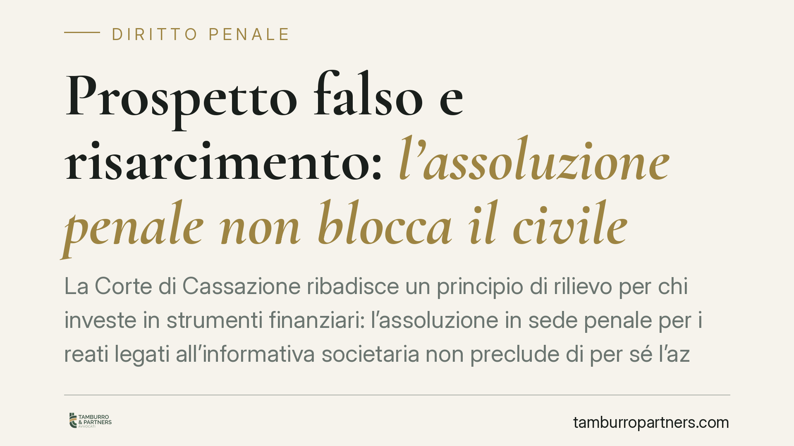

Prospetto falso e risarcimento: l'assoluzione penale non blocca il civile
La Corte di Cassazione ribadisce un principio di rilievo per chi investe in strumenti finanziari: l'assoluzione in sede penale per i reati legati all'informativa societaria non preclude di per sé l'azione civile di risarcimento fondata sul prospetto inesatto. Vale l'autonomia tra i due giudizi, che rispondono a presupposti e standard probatori diversi. Vediamo cosa significa in concreto per investitori ed emittenti.

Il principio affermato
La Prima Sezione Civile della Cassazione, con pronuncia emessa nell'ottobre 2026, è tornata sul rapporto tra esito penale e responsabilità civile in materia di informativa finanziaria. Il punto è netto: l'assoluzione dell'imputato per i reati connessi alla rappresentazione contabile o informativa della società non estingue automaticamente la pretesa risarcitoria dell'investitore danneggiato da un prospetto inesatto.
*Nota redazionale: gli estremi completi della pronuncia (numero e anno) non risultano al momento confermati da fonti ufficiali. Riportiamo pertanto il solo principio di diritto, rinviando alla consultazione della massima una volta pubblicata.*
Due illeciti distinti: falso in prospetto e falso in bilancio
È essenziale non confondere due figure diverse.
Il falso in prospetto è disciplinato dall'art. 173-bis del TUF (D.lgs. 58/1998): punisce chi, nei prospetti richiesti per la sollecitazione all'investimento o per l'ammissione alla quotazione, espone false informazioni od occulta dati, idonei a indurre in errore i destinatari.
Il falso in bilancio (false comunicazioni sociali) è invece l'illecito dell'art. 2621 del codice civile, relativo alla rappresentazione della situazione economico-patrimoniale della società.
Sono condotte che possono intrecciarsi, ma restano autonome. L'assoluzione per una non equivale all'esclusione dell'altra, né incide necessariamente sulla responsabilità civile dell'emittente.
L'autonomia tra penale e civile
Il fondamento del principio sta nell'art. 652 del codice di procedura penale. La sentenza penale irrevocabile di assoluzione fa stato nel giudizio civile di risarcimento solo quando è pronunciata con alcune formule precise: perché il fatto non sussiste, perché l'imputato non lo ha commesso, oppure perché il fatto è stato compiuto nell'adempimento di un dovere o nell'esercizio di una facoltà legittima.
Al di fuori di queste ipotesi — ad esempio l'assoluzione per insufficienza di prova o perché il fatto non costituisce reato — il giudice civile conserva piena autonomia di valutazione.
La ragione è tecnica. Il processo penale richiede la prova della colpevolezza oltre ogni ragionevole dubbio. Il giudizio civile si fonda invece sul criterio del «più probabile che non»: una soglia probatoria meno severa. Può così accadere che una condotta non raggiunga lo standard penale ma risulti sufficiente a fondare la responsabilità risarcitoria.
La responsabilità da prospetto ex art. 94 TUF
Sul piano sostanziale, l'azione dell'investitore trova base nell'art. 94 del TUF, che disciplina la responsabilità civile da prospetto a carico dell'emittente, dell'offerente e dei soggetti responsabili delle informazioni.
Un aspetto va reso con esattezza, perché spesso trattato in modo impreciso. L'art. 94 non prevede una «prescrizione quinquennale». La norma configura un termine di decadenza: l'azione va esercitata entro un anno dalla scoperta dell'inesattezza o dell'omissione e, in ogni caso, non oltre cinque anni dalla pubblicazione del prospetto. Sono quindi due limiti cumulativi, e la loro natura decadenziale — non prescrizionale — incide sulle modalità di computo e sulla possibilità di interruzione.
Quando l'emittente opera nel settore assicurativo, la vigilanza coinvolge competenze ripartite: Consob per la trasparenza dell'informativa al mercato e IVASS (già ISVAP) per i profili di stabilità e correttezza dell'attività assicurativa. La provenienza dei dati inseriti nel prospetto può così intrecciare più ambiti di controllo, con riflessi sulla ricostruzione delle responsabilità.
Implicazioni pratiche
Per l'investitore. L'esito penale sfavorevole non è un ostacolo automatico. Resta possibile agire in sede civile, a condizione di rispettare i termini di decadenza dell'art. 94 TUF e di dimostrare il nesso tra l'informazione inesatta e la decisione di investimento.
Per l'emittente. L'assoluzione penale non mette al riparo dal contenzioso civile. La gestione del rischio informativo — procedure di due diligence sul prospetto, tracciabilità delle fonti, documentazione delle verifiche — resta determinante.
Cosa fare in concreto
- Verificate subito i termini. Individuate la data di scoperta dell'inesattezza e quella di pubblicazione del prospetto: il termine annuale e quello quinquennale corrono in parallelo.
- Conservate la documentazione d'investimento. Prospetto, ordini, estratti e comunicazioni ricevute sono la base probatoria dell'azione civile.
- Non attendete l'esito penale. Valutate l'azione risarcitoria in autonomia, verificando la formula assolutoria eventualmente adottata.
- Ricostruite il nesso causale. Documentate il collegamento tra l'informazione errata e la scelta di investire.
- Richiedete una valutazione tecnica preliminare prima di avviare qualsiasi iniziativa giudiziale.
---
Contributo informativo a cura di Tamburro & Partners Avvocati. Non costituisce parere legale.
Ogni condominio ha una storia a sé.
Se gestisci un'amministrazione e vuoi un confronto su una specifica questione condominiale, scrivi allo studio. Ti rispondiamo entro un giorno lavorativo.